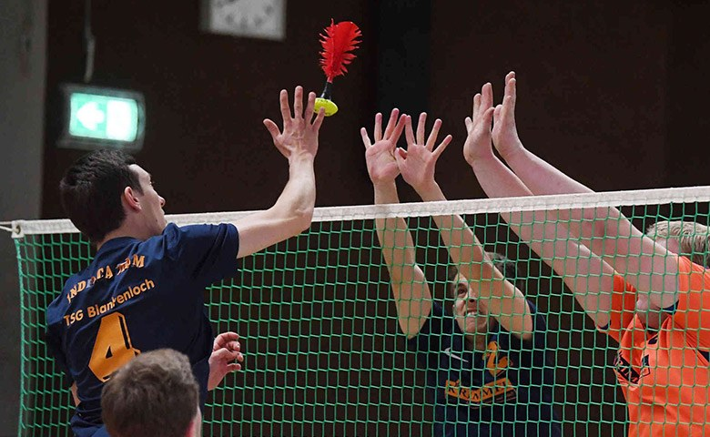
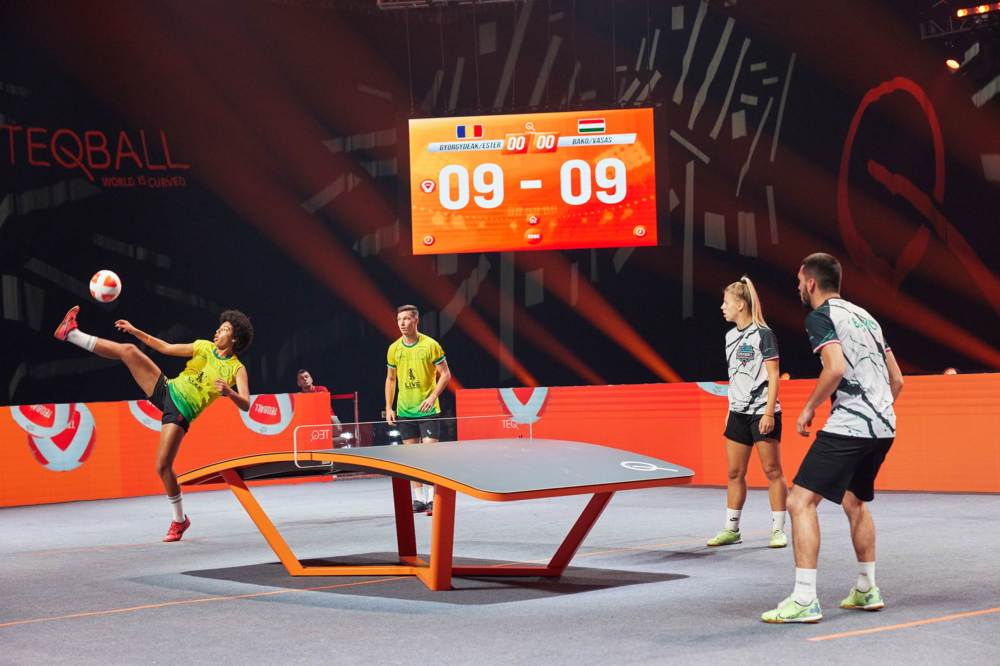
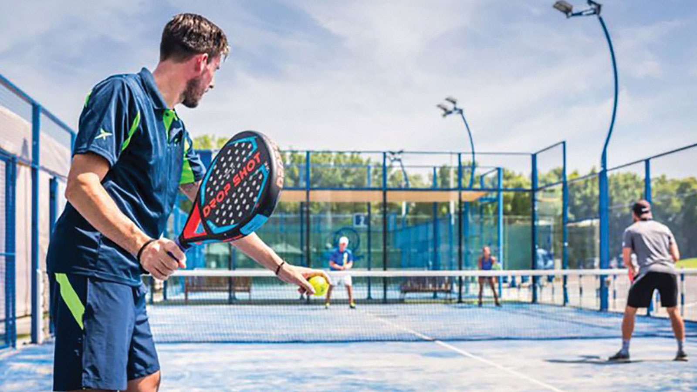

L'inventivité humaine est sans limite, en particulier en ce qui concerne les divertissements et le jeu.
Il existe une multitude de sports, chaque jour voit émerger une nouvelle discipline issue de l'imagination fertile d'adeptes du jeu. Ces nouveautés sont parfois totalement innovantes, elles peuvent être le fruit de l'évolution d'une pratique courante, ou encore résulter de la fusion de plusieurs jeux existants.
Voici les trois sports émergeants que notre communauté a choisi de vous présenter.
La peteca
Le sport venu du Brésil
La pétéca, est un sport ancestral brésilien. C’est un mélange de badminton, de volley-ball et de pelote basque. Le jeu consiste à s'échanger à la main la pétéca, sorte de gros volant formé de quatre grandes plumes sur une base en caoutchouc
entre deux joueurs de part et d'autre d'un filet. Plus d'informations sur le site de la fédération de peteca.

Le teqball
Le foot de table
Le teqball est un sport de ballon pratiqué sur une sorte de table de tennis de table arquée, combinant ainsi football et tennis de table. La pratique ressemble au tennis-ballon qui, lui, emprunte les codes du tennis.

Le paddle-tennis
Le tennis facile
Le paddle-tennis est un sport de balle joué avec une raquette solide. Comparé au tennis, le court est plus petit, ne contient qu'un seul couloir au lieu de deux et le filet est également moins haut. Il se joue avec une raquette solide,
des balles de tennis dépressurisées et un service à la cuillère.
